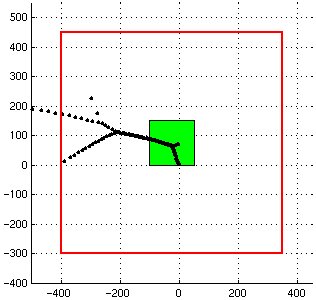
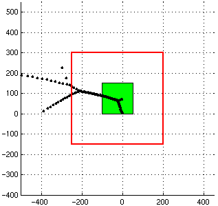

| << Prev | Start, Page 2, Page 3, Page 4, Page 5. | Next >> |
The key is to project our matrix of dimension 200 onto a subspace spanned by the invariant subspace corresponding to the eigenvalues near the region of the complex plane we are interested in. The projected matrix will hopefully have dimension much less than 200, and so the computation will be faster.
The following figures indicate how our projection algorithm operates. The green square represents the area of the complex plane visible in EigTool (the area our grid is defined over), while the red square represents the eigenvalues whose eigenvectors we project onto. In the left figure, the projection level is set to 2, while in the right one the projection level is set to 1. The red rectangle is defined as the region which is (1+2b) times as high and (1+2b) times as wide as the rectangle visible in EigTool, where b is the projection parameter.
|  |  |
When you click `Go!', the matrix is first projected onto the space spanned by eigenvectors whose eigenvalues are within the red square. This is a non-trivial operation, but the benefits will far outweigh this extra cost if we are computing on a fine grid. The pseudospectra of this smaller, projected matrix are then computed. As long as the effect of the eigenvalues we have left out of our projection is small, the plot of the pseudospectra will look essentially identical, and importantly, the computation will be faster.
First, try reducing the projection level to 2 using the Projection Level option of the Extras menu, and recomputing the pseudospectra. The plot you get should look exactly the same as the one obtained before (with infinite projection level i.e. no projection). On the coarse grid used here, the computation time is worse (we have to take account of the time taken to project the matrix), but we will see real differences when we move to the fine grid. This takes about 25 seconds on my Sun Ultra 5 workstation. Notice that the matrix dimension displayed by EigTool is now dim=200->126 not dim=200 (if you can't see this, turn on Display dimension in the Extras menu), indicating that the projected matrix has dimension 126.
Since we saw no difference for a projection level of 2, now reduce it to 1 and recompute again. Once more, there is no change to the pseudospectra. This time the computation is quicker, since the matrix dimension has already been reduced during the first projection. Your EigTool should now look like this:
| << Prev | Start, Page 2, Page 3, Page 4, Page 5. | Next >> |
EigTool home page.